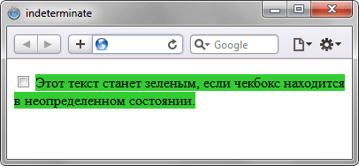

Псевдокласс :indeterminate
Псевдокласс :indeterminate задаёт стиль для переключателей, когда они находятся в неопределённом состоянии. К примеру, если ни один переключатель не помечен, то они находятся в указанном состоянии. В реальности, стиль применяется только к элементам, у которых DOM-атрибут :indeterminate через JavaScript установлен в значение true. Также этот псевдокласс используется некоторыми браузерами для элемента <progress>.
Синтаксис
Селектор:indeterminate { ... }Пример
<!DOCTYPE html>
<head>
<meta charset="utf-8">
<title>indeterminate</title>
<style>
:indeterminate, :indeterminate + span { background: limegreen; }
input, span { background: red; }
</style>
</head>
<body>
<form>
<p><input type="checkbox"> <span>Этот текст станет зеленым, если чекбокс
находится в неопределенном состоянии.</span></p>
</form>
<script>
document.getElementsByTagName("input")[0].indeterminate = true;
</script>
</body>
</html>В данном примере с помощью JavaScript первый элемент формы переводится в неопределённое состояние и к нему применяются стили. Результат примера показан на рис. 1.

Рис. 1. Результат использования псевдоэлемента :indeterminate
Спецификация
| Спецификация | Статус |
|---|---|
| WHATWG HTML Living Standard | Живой стандарт |
| HTML5 | Возможная рекомендация |
| Selectors Level 4 | Рабочий проект |
| CSS Basic User Interface Module Level 3 | Рабочий проект |
Браузеры
| Internet Explorer | Chrome | Opera | Safari | Firefox | |
| input type="checkbox" | 9 | 1 | 10.60 | 3 | 3.6 |
| <progress> | 10 | 6 | 15 | 5.2 | 6 |
| Android | Firefox Mobile | Opera Mobile | Safari Mobile | |
| input type="checkbox" | 2.1 | 1 | 10 | 3 |
| <progress> | 2.1 | 6 | 15 | 5.2 |